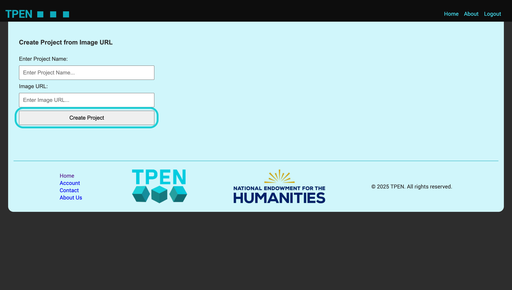

Quick Guide to Create a New Project
Follow these steps to create a new project in TPEN.

-
Click on the Create a New Project from My Actions tab on the home page.
-
Click on the Transcribe button in the Transcribe Image tab.
-
Enter the Project Name and a URL of the image you want to use for your project in the provided field.
-

Click on the Create Project button to finalize the creation of your project.
-
Your new project will now appear in the project list, and you can start transcribing it.
-
Click on the Create a New Project from My Actions tab on the home page.
-
Click on the Import Manifest button in the Import IIIF Manifest tab.
-

Enter the IIIF Manifest URL in the provided field.
-
Click on the Import Project button to finalize the creation of your project.
-
Your new project will now appear in the project list, and you can start working on it.
-
Click on the Create a New Project from My Actions tab on the home page.
-
Click on the Import Project button in the Import T-PEN 2.8 Project tab.
-
This will take you to the T-PEN 2.8 Login Page. Log in with your T-PEN 2.8 credentials.
-
After successful login, you will see a list of your T-PEN 2.8 projects. Select the project you want to import.
-
As you select a project, it will be imported into TPEN3, with all the project configurations and annotations preserved.
-
All the collaborators from the T-PEN 2.8 project will be listed and you can invite them to collaborate on the imported project.
-
Lastly, review the project details and you can start working on it.
Click on the Create a New Project from My Actions tab on the home page.
Click on the Transcribe button in the Transcribe Image tab.
Enter the Project Name and a URL of the image you want to use for your project in the provided field.
Click on the Create Project button to finalize the creation of your project.
Your new project will now appear in the project list, and you can start transcribing it.
Click on the Create a New Project from My Actions tab on the home page.
Click on the Import Manifest button in the Import IIIF Manifest tab.
Enter the IIIF Manifest URL in the provided field.
Click on the Import Project button to finalize the creation of your project.
Your new project will now appear in the project list, and you can start working on it.
Click on the Create a New Project from My Actions tab on the home page.
Click on the Import Project button in the Import T-PEN 2.8 Project tab.
This will take you to the T-PEN 2.8 Login Page. Log in with your T-PEN 2.8 credentials.
After successful login, you will see a list of your T-PEN 2.8 projects. Select the project you want to import.
As you select a project, it will be imported into TPEN3, with all the project configurations and annotations preserved.
All the collaborators from the T-PEN 2.8 project will be listed and you can invite them to collaborate on the imported project.
Lastly, review the project details and you can start working on it.
1Start creating new projects using different templates.
2Import IIIF manifest using the manifest URL.
3Import a T-PEN 2.8 old project to T-PEN 3 with the same project structure.
4View and Manage user profile.
5Easy access to all your projects.
6Use the setting like button to manage the project configurations.
7View the list of all the projects.
8View the newest project created with last edited date.
1Click on Start on the New Project Wizard to go through a guide to help understand how to create a new project.
2Click on Copy to duplicate an existing project.
3Click on Transcribe to create a new project from an image.
4Click on Edit Manifest to build a custom manifest from online resource to create a new project.
5Click on Import Manifest to import a project from IIIF Manifest.
6Click on Import Project to import a TPEN2.8 project to TPEN3 with the same configurations.

1The user profile tab has all the User details including Display Name, Email and Metadata.
2Click the Update Profile to edit the Display Name.
1Click on the Manage Project button to access the project management features.
2View the list of all your projects, including their names, descriptions, and statuses.
3Use the search bar to quickly find a specific project by name or keyword.
4Sort the projects by different criteria, such as creation date or last modified date.
5Click on a project to view its details, including the project description, collaborators, and annotations.
6Use the provided tools to manage the project settings, such as changing the project name or description.
7Invite collaborators to the project by entering their email addresses or usernames.
8Review the project activity log to see the history of changes made to the project.
9Export the project data in various formats for backup or sharing purposes.
10Delete the project if it is no longer needed, ensuring that you have the necessary permissions to do so.
11Access the project settings to configure options such as visibility, permissions, and notifications.
12Use the project dashboard to get an overview of the project's progress, including completed tasks and pending actions.
13Utilize the project timeline to track important milestones and deadlines.
14Collaborate with team members by adding comments, feedback, and suggestions on project tasks.
15Share the project with external stakeholders by generating a public link or inviting them via email.
16Monitor the project's performance using analytics tools to assess engagement and productivity.
17Regularly update the project documentation to keep all team members informed about the project's status and changes.